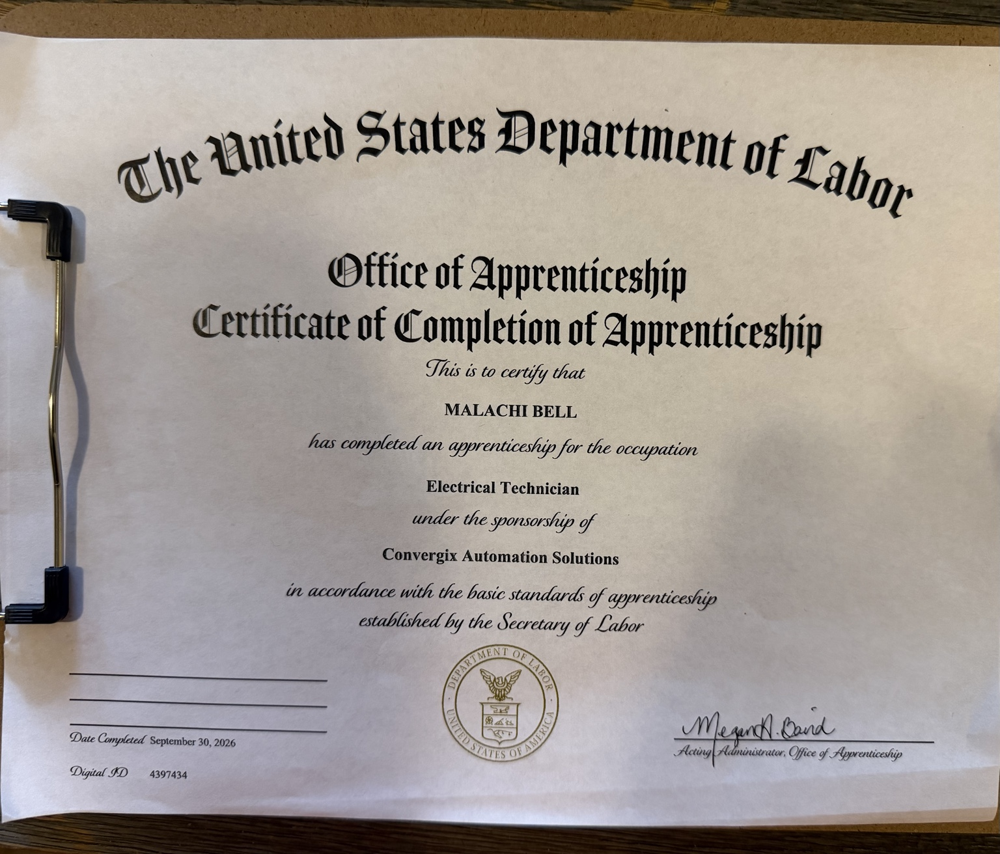
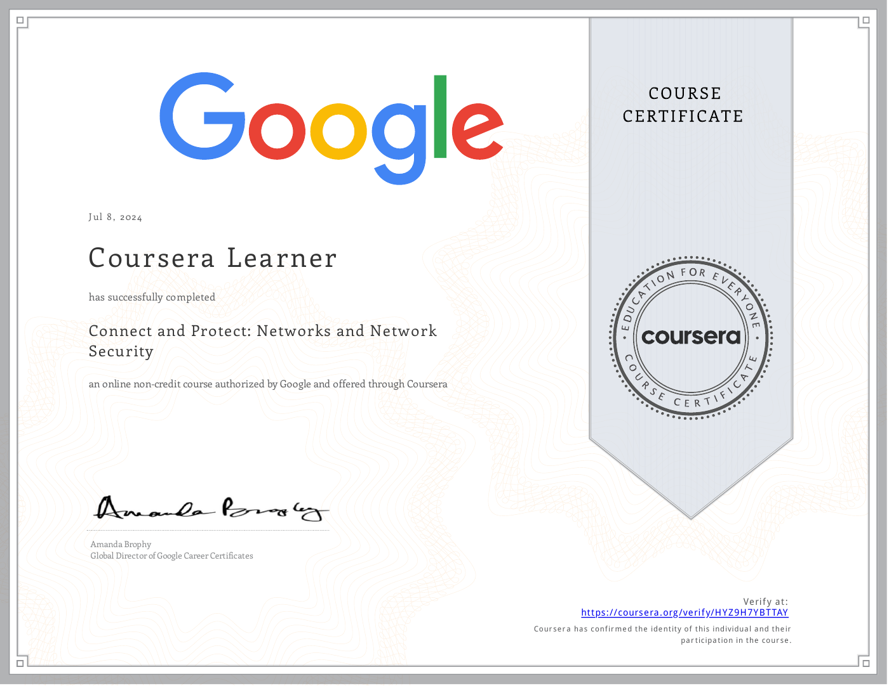
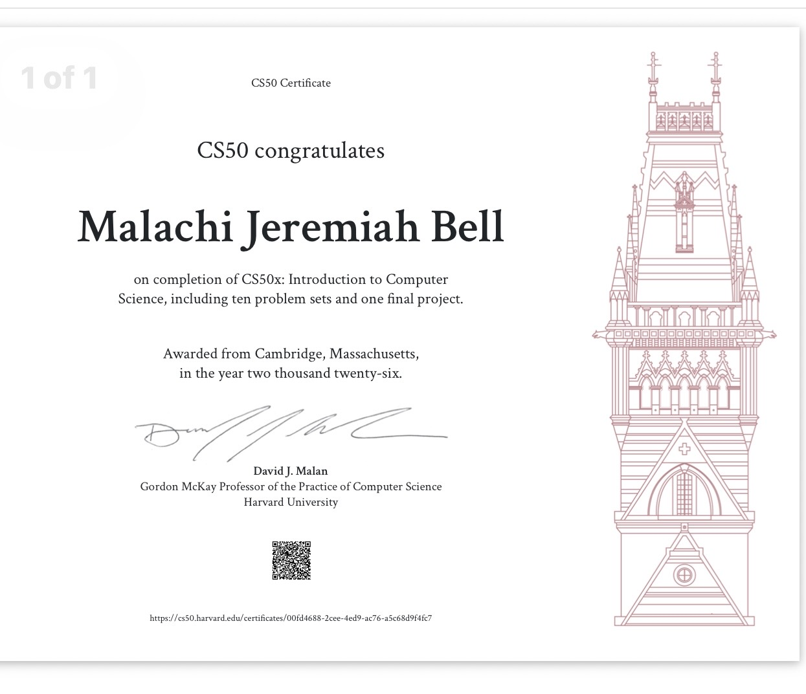

Professional Experience
Machine Building Electrical Technician with experience in electrical control panel building, panel wiring, industrial automation, machine building, troubleshooting, and field installation.
Education and Certifications
- U.S. Department of Labor Electrical Technician Apprenticeship — completed September 30, 2026, sponsored by Convergix Automation Solutions
- 840 contact hours at Lake Michigan College
- UL 508A Certification
- Google Cybersecurity Certificate
- CS50x: Introduction to Computer Science — completed 2026
Completed Apprenticeship
Electrical Technician
Certificate of Completion of Apprenticeship issued by the U.S. Department of Labor, Office of Apprenticeship.
Sponsor: Convergix Automation Solutions
Completed: September 30, 2026

View full certificateGoogle · Coursera
Connect and Protect: Networks and Network Security
Course completion certificate for an online course authorized by Google and offered through Coursera.
Completed: July 8, 2024

View certificate PDFCS50 · Computer Science
CS50x: Introduction to Computer Science
Completed ten problem sets and a final project combining embedded programming and electronics.
Completed: 2026
Credential: CS50 Certificate

View full certificate